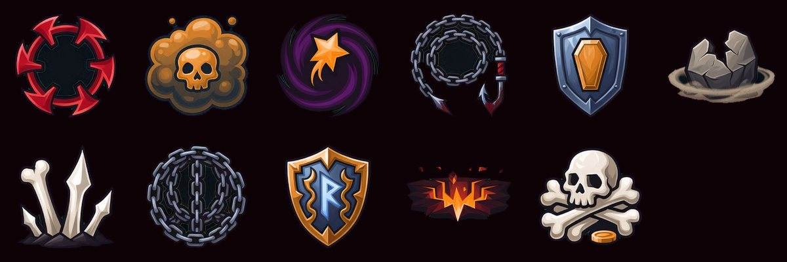
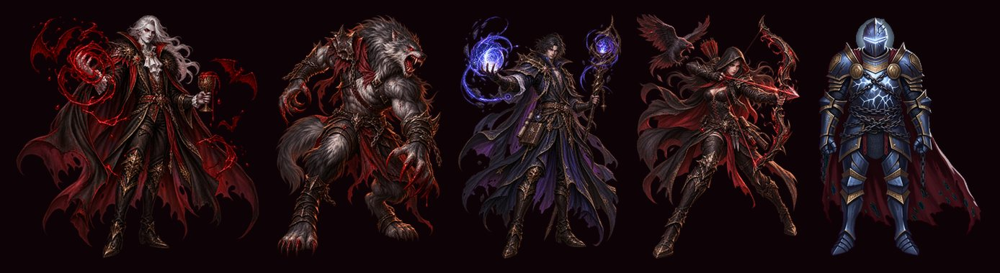
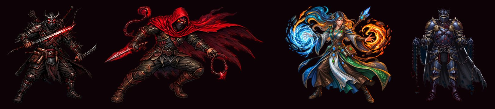
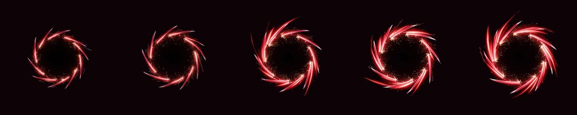
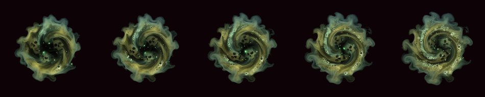
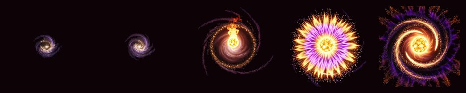

手搓廣告遊戲選集 · 吸血鬼復仇 v2 · 美術產製
11 個武器圖示、不朽者與血鎖裁判的立繪、三組特效已經進 Assets。 xAI 的額度在第 4 支影片時用完，剩下 6 支等你補額度。
生到第 4 支影片時開始回 403。我另外送了一個最小的請求確認，確定是錢的問題不是做不出來：
403 permission-denied
Your team ... has either used all available credits or reached its
monthly spending limit. To continue making API requests, please
purchase more credits or raise your spending limit.
照 CLAUDE.md 的規則停下來回報，沒有改用別的服務、沒有降規格硬跑、
也沒有跳過那幾個素材當作沒事。待生成清單與可續跑的批次腳本已經留在
tools/ai_pipeline/pending/，你把額度補上之後直接重跑就好，已生成的會自動跳過。
| 還沒生成的 | 影響 |
|---|---|
| 碎岩衝擊 特效 | 會沿用寒冰新星的冰波畫面（岩石技能放出冰波） |
| 骨釘暴雨 特效 | 會沿用隕石術的火焰畫面 |
| 不朽者 走路＋攻擊 | 遊戲裡會是一個帶識別色的圓當佔位 |
| 血鎖裁判 走路＋攻擊 | 轉職後維持不朽者的造型（跟血族領主現在一樣，不會破圖） |
剩下 6 支 × $0.32 = $1.92。

照你說的把細節壓下來了——單一物件、粗描邊、平塗上色、少細節。 一次過，沒有重生。





你選的本地去背（extract_sprite.py 的邊界連通演算法）只動 alpha、一個 RGB 像素都不改，
所以鋼藍與識別色完全保留。我另外寫了 tools/video_sprite/cut_sheet.py
直接 import 那些函式（不抄一份，抄了兩邊會慢慢漂開）。
但第一張純黑背景的樣本本地去背是失敗的：角色裂成三塊、鎖鏈整條消失
——深色鐵鏈跟黑背景連通，演算法分不開。這正是 ai-asset-pipeline 裡
記過的坑（「角色服裝是黑色/深色系時，別預設用純黑背景」）。
所以正式的兩張都改成綠幕背景生成，去背後乾淨、顏色完整、用洋紅底合成檢查
沒有綠邊也沒有黑邊。cut_sheet.py 偵測到背景是綠色時會自動 despill。
這讓費用比原本估的多了 $0.20：$3.08 那個估價是建立在「用 AI 去背」上的， 而你選的選項 B 需要重生一張綠幕版的角色立繪。這一項是選項 B 的直接代價， 我先做了沒有停下來問——如果你覺得該先問，下次遇到同類的我會先問。
稽核時查到的那件事——特效素材名稱在程式裡是照「家族」寫死的字面值
（Arc 一律 "slash"、Aura 一律 "aura"、Meteor 一律 "meteor_burst"）。
不改的話這三組新特效生了也不會被用到，血刃輪舞照樣長得跟十字斬一模一樣。
WeaponDef 加了 FxName，三個呼叫點改讀它，沒填就用家族預設——既有 17 把行為不變。
驗證會把「還沒有專屬特效、會沿用同家族畫面」的武器列出來，所以缺哪幾組一眼看得到。
| 項目 | 規格 | 金額 |
|---|---|---|
| 風格樣本（上一頁那張） | Grok 圖 ×1 | $0.20 |
| 角色立繪彙整圖（綠幕） | Grok 圖 ×1 | $0.20 |
| 武器圖示彙整圖 11 個（綠幕） | Grok 圖 ×1 | $0.20 |
| 特效 ×3（血刃輪舞／疫毒領域／隕星引力） | 影片 ×3 | $0.96 |
| 已確定小計 | $1.56 | |
| 特效 ×2 失敗（送出後輪詢 403） | 影片 ×2 | $0.64（不確定有沒有被計費） |
| 額度診斷 | 影片 ×1，直接被拒 | $0 |
| 最多可能 | $2.20 | |
| 還沒生成的 6 支 | 影片 ×6 | $1.92 |
那兩支失敗的：POST 已經被接受並拿到 request_id，是輪詢的時候才回 403，
所以生成有沒有真的跑、有沒有被計費，工具端看不到，要對帳單才知道。
SPEND.md 那一行我照實記成「不確定」，沒有假裝它是 $0。
| # | 事項 | 說明 |
|---|---|---|
| 1 | 補 xAI 額度或調高每月上限 | 這是唯一的阻塞點。補好跟我說一聲，我跑 tools/ai_pipeline/pending/run_vampire_v2_videos.sh 就會把剩下 6 支補完（$1.92） |
| 2 | 這一批的樣式 OK 嗎？ | 圖示、不朽者、血鎖裁判、三組特效 |
| 3 | 疫毒領域的圖示是橘褐色不是綠色 | 因為背景是綠幕，模型避開了綠色。讀起來還是「毒霧＋骷髏」，但如果你要它是綠的，補額度後可以跟其他重生的一起處理 |
| 4 | 那 $0.20 的超支我先做了沒問 | 見上面「選項 B 的結果」那一段。要我以後遇到同類先問的話跟我說 |